관리 프로그램 사용 매뉴얼
1. 시작하기 전에
스마트해법수학 서현효자점 관리 프로그램은 원생 관리, 수업 스케줄, 출결·보강, 교습비 청구·수납, 카카오톡 공지문 이미지 생성, 대시보드를 한 화면에서 통합적으로 관리할 수 있는 데스크톱 프로그램입니다.
인터넷 연결 없이도 작동하며, 모든 데이터는 내 PC(또는 지정한 클라우드 동기화 폴더)에 안전하게 저장됩니다. 이 매뉴얼은 프로그램을 처음 사용하시는 분을 위해 각 화면을 차례대로 소개합니다.
2. 대시보드 — 한눈에 보는 교습소 현황
프로그램을 실행하면 가장 먼저 보이는 화면입니다. 이번 달 청구·입금 현황, 재원생 수, 오늘 수업, 이달의 생일, 청구총액 추이 등 교습소 운영 현황을 한 화면에서 확인할 수 있습니다.
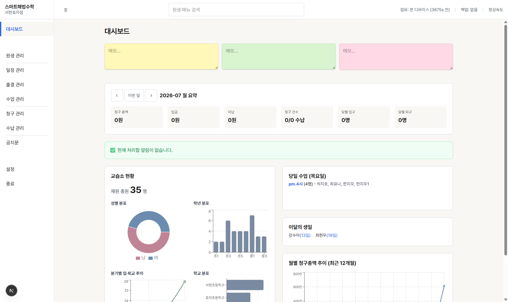
주요 구성 요소:
- 메모 카드(노랑/초록/분홍) — 자유롭게 메모를 남길 수 있는 포스트잇입니다. 클릭 후 바로 입력하면 자동 저장됩니다.
- 이번 달 요약 — ‹ › 버튼으로 다른 달의 청구 총액·입금·미납 현황을 확인할 수 있습니다.
- 교습소 현황 — 재원 총원, 성별/학년/학교 분포를 도넛·바 차트로 보여줍니다.
- 당일 수업 — 오늘 요일에 예정된 수업 시간과 원생 명단이 표시됩니다.
- 이달의 생일 — 이번 달 생일인 원생을 자동으로 안내합니다.
- 월별 청구총액 추이 — 최근 12개월 청구 총액 변화를 그래프로 보여줍니다.
3. 원생 관리
재원생·퇴교생 정보를 등록하고 조회하는 화면입니다. 이름, 학교, 학년, 연락처, 수업 요일/시간 등을 관리합니다.
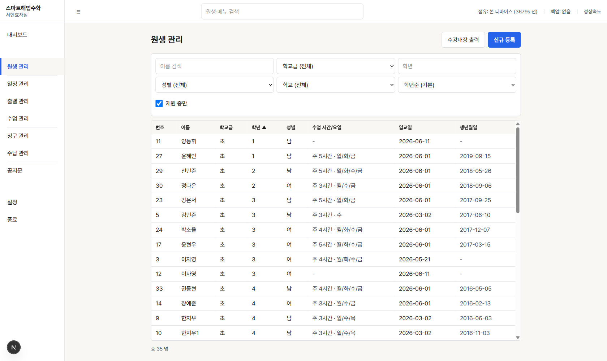
사용 방법:
- 상단 필터(이름 검색, 학교급, 학년, 성별, 학교)로 원하는 원생을 빠르게 찾을 수 있습니다.
- '재원 중만' 체크를 해제하면 퇴교한 원생도 함께 표시됩니다.
- 그리드의 컬럼 제목(학년, 이름 등)을 클릭하면 해당 기준으로 정렬됩니다.
- '신규 등록' 버튼을 눌러 새 원생을 등록합니다.
- '수강대장 출력' 버튼을 누르면 인쇄용 원생 명단이 별도 창으로 열립니다.
- 그리드에서 원생 이름을 클릭하면 상세/수정 화면으로 이동합니다.
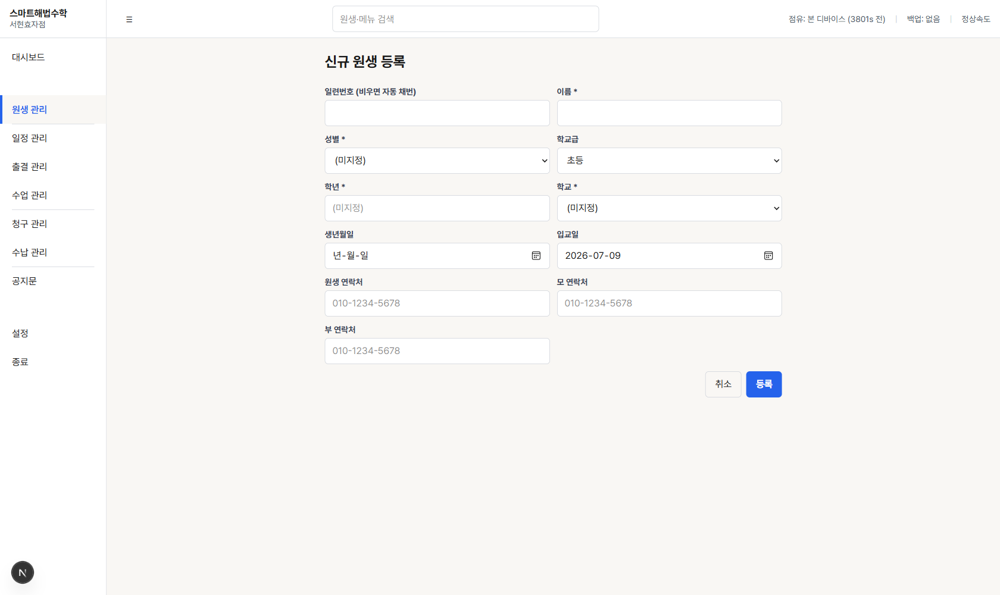
등록 방법:
- 이름(필수), 성별, 학교급, 학년, 학교를 입력합니다.
- 일련번호는 비워두면 자동으로 번호가 부여됩니다.
- 생년월일·입교일·연락처는 필요한 만큼 입력합니다(입교일은 기본값으로 오늘 날짜가 채워집니다).
- '등록' 버튼을 누르면 저장되고 원생 목록으로 돌아갑니다.
4. 일정 관리
교습기간(월 단위 수업 시작~종료일)을 설정하고, 공휴일·방학·보강데이 등 학사 일정을 캘린더에 배치하는 화면입니다. 좌·중·우 3개월을 한 화면에서 볼 수 있습니다.
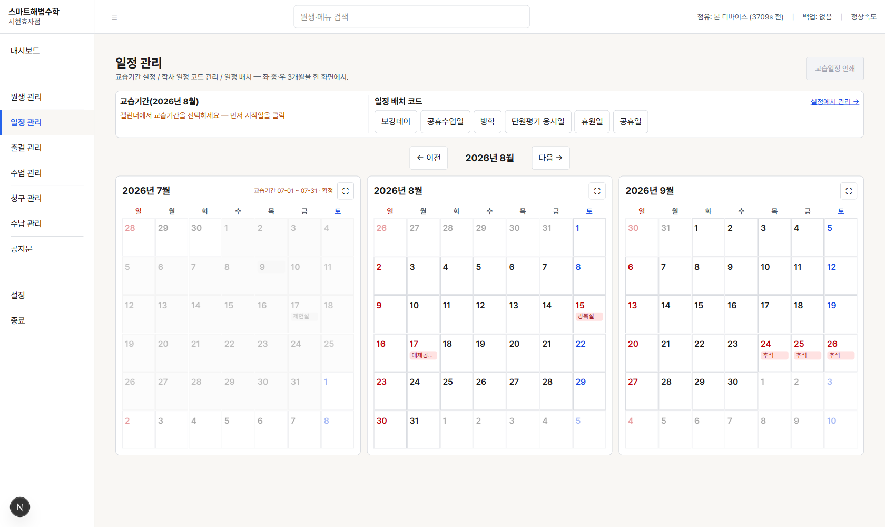
사용 방법:
- 가운데 달(교습기간 미확정 상태)에서 캘린더의 시작일→종료일을 순서대로 클릭해 교습기간을 지정합니다.
- '일정 배치 코드'(보강데이, 공휴수업일, 방학, 단원평가 응시일, 휴원일, 공휴일) 중 하나를 선택한 뒤 캘린더 날짜를 클릭하면 해당 일정이 표시됩니다.
- 법정 공휴일은 미리 등록되어 있어 자동으로 표시됩니다.
- 우측 상단 '교습일정 인쇄' 버튼으로 해당 월의 인쇄용 캘린더를 별도 창으로 미리보기·출력할 수 있습니다.
5. 출결 관리
매일의 출석·결석을 기록하고, 결석에 대한 보강을 등록·관리하는 화면입니다. 한 화면에서 원생별로 한 달 전체 출결을 확인할 수 있습니다.
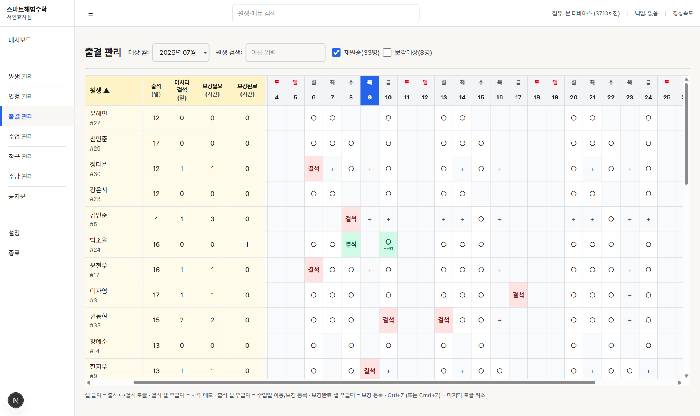
사용 방법:
- 상단에서 대상 월을 선택하고, 이름으로 원생을 검색할 수 있습니다.
- '○'는 출석, 빨간 '결석'은 결석을 의미합니다. 셀을 클릭하면 출석↔결석이 토글됩니다.
- 결석 셀을 우클릭하면 결석 사유 메모를 남길 수 있습니다.
- 초록색 '+보강' 표시는 그날 정규수업과 함께 보강도 진행되었음을 의미합니다.
- 회색 '+' 칸(비수업일)을 클릭하면 그 날짜로 보강을 등록할 수 있습니다.
- 실수로 토글했을 때는 Ctrl+Z(맥에서는 Cmd+Z)로 마지막 변경을 취소할 수 있습니다.
6. 수업 관리 (캘린더 / 보강 관리)
요일별 정규 수업 스케줄을 월·주·일 단위 캘린더로 확인하고, 보강이 필요한 원생을 한눈에 모아보는 화면입니다.
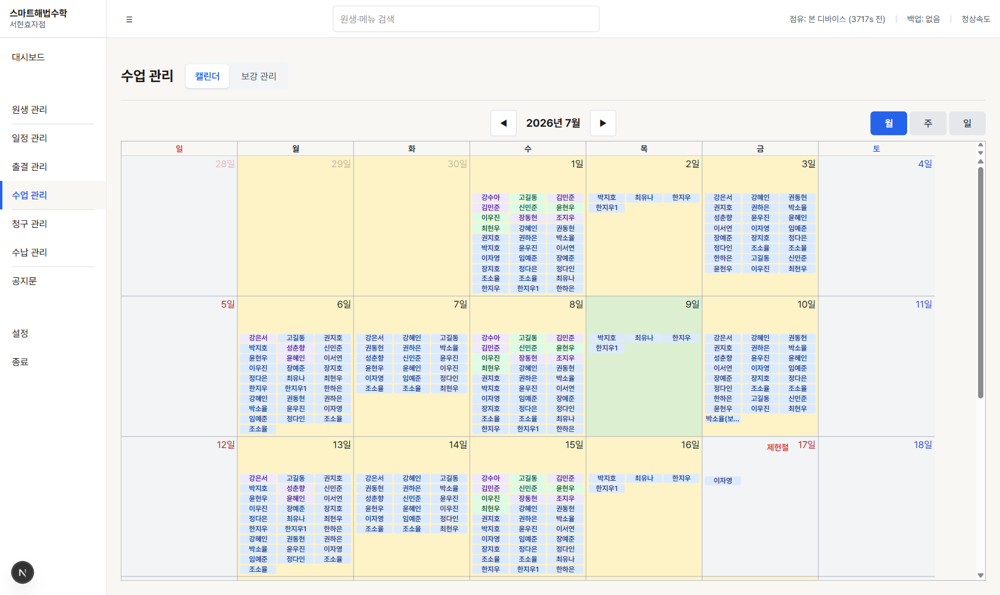
사용 방법:
- 상단 '캘린더' / '보강 관리' 탭으로 화면을 전환합니다.
- 캘린더 우측 상단 '월 / 주 / 일' 버튼으로 보기 단위를 바꿀 수 있습니다.
- 각 셀의 원생 이름을 클릭하면 해당 원생의 출결 관리 화면으로 바로 이동합니다.
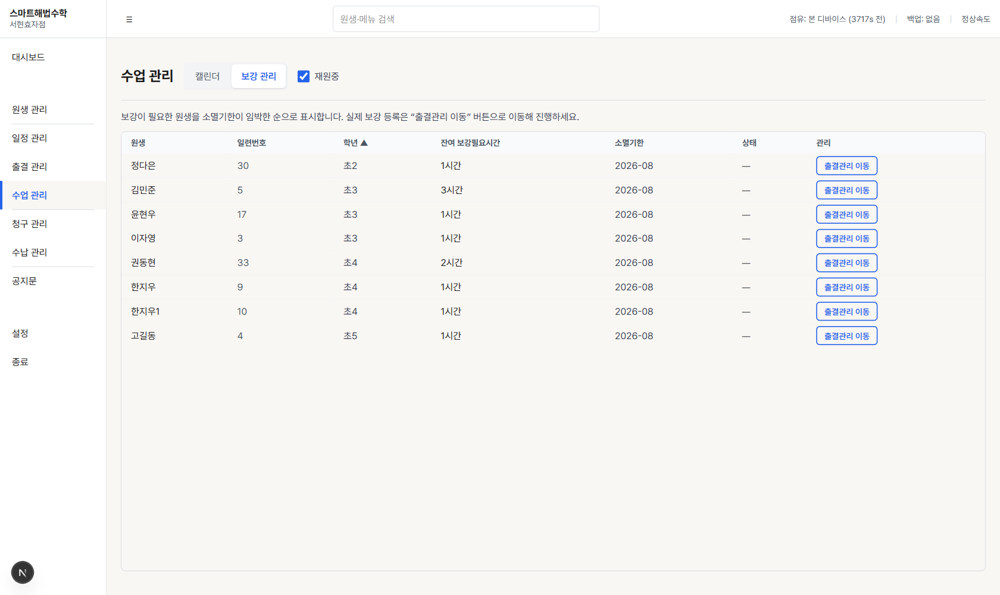
보강이 필요한 원생을 소멸기한이 임박한 순서로 보여줍니다. 컬럼 제목을 클릭하면 원생/학년/잔여시간 등 기준으로 정렬할 수 있습니다. '출결관리 이동' 버튼을 누르면 실제 보강 등록을 위해 출결 관리 화면으로 이동합니다.
7. 청구 관리
매월 원생별 교습비를 계산해 청구 데이터를 생성하고, 확정하는 화면입니다.
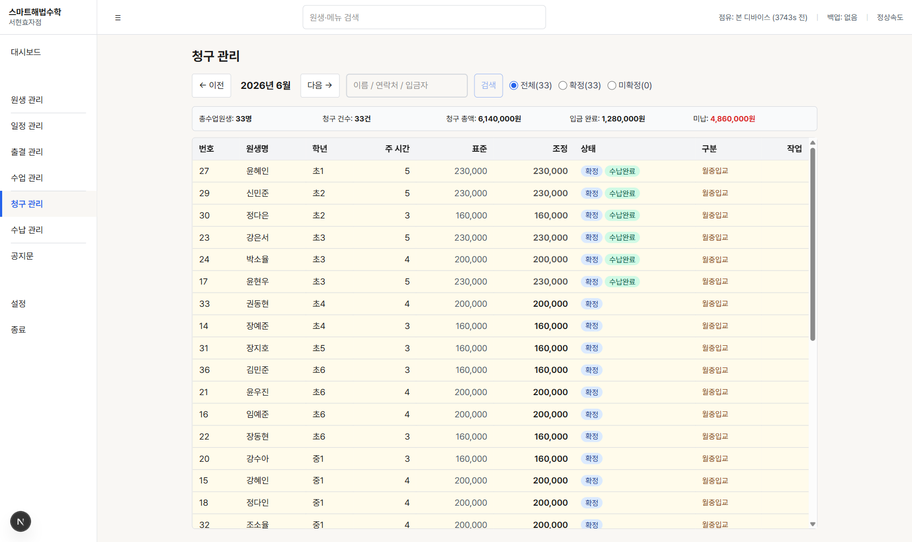
사용 방법:
- 상단 ← 이전 / 다음 → 버튼으로 청구년월을 이동합니다.
- 그 달의 청구가 아직 없으면 '청구 데이터 생성' 버튼으로 전체 원생의 표준 교습비를 자동 계산해 생성합니다.
- 필요 시 개별 원생의 '조정' 금액을 직접 수정할 수 있습니다.
- 청구 내용을 확인한 뒤 '확정' 처리합니다. 확정된 청구는 수납 관리 화면에서 입금을 받을 수 있습니다.
- '전체 / 확정 / 미확정' 라디오로 상태별로 필터링해 볼 수 있습니다.
8. 수납 관리
확정된 청구에 대한 입금(수납) 처리를 하는 화면입니다.
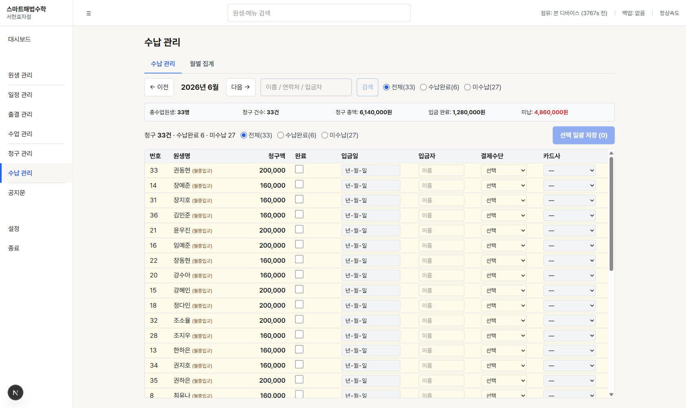
사용 방법:
- '완료' 체크박스를 클릭하면 입금일이 오늘 날짜로 자동 채워집니다.
- 입금자명·결제수단(현금/카드/계좌이체 등)을 선택합니다. 카드 결제는 카드사도 함께 선택합니다.
- 여러 건을 입력한 뒤 우측 상단 '선택 일괄 저장' 버튼으로 한 번에 저장합니다.
- '전체 / 수납완료 / 미수납' 라디오로 필터링해 미수납 건만 모아볼 수 있습니다.
- '월별 집계' 탭에서는 월별 청구·수납 통계를 확인할 수 있습니다.
9. 공지문 관리
카카오톡 등으로 학부모에게 전달할 교습비 안내 공지문 이미지를 만드는 화면입니다.
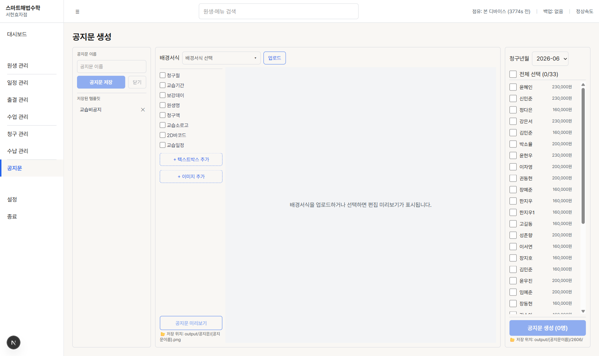
사용 방법:
- 배경서식을 선택하거나 새로 업로드합니다.
- 공지문에 넣을 항목(청구월, 원생명, 청구액, 교습일정 등)을 체크합니다.
- 우측에서 공지문을 발송할 원생을 선택합니다(전체 선택 가능).
- '공지문 미리보기'로 결과를 확인한 뒤 '공지문 생성' 버튼을 눌러 원생별 이미지 파일을 만듭니다.
- 자주 쓰는 구성은 '공지문 저장'으로 템플릿에 등록해두면 다음에 바로 불러올 수 있습니다.
10. 설정
교습소 운영 환경을 설정하는 화면입니다. 변경 사항은 즉시 저장되어 반영됩니다.
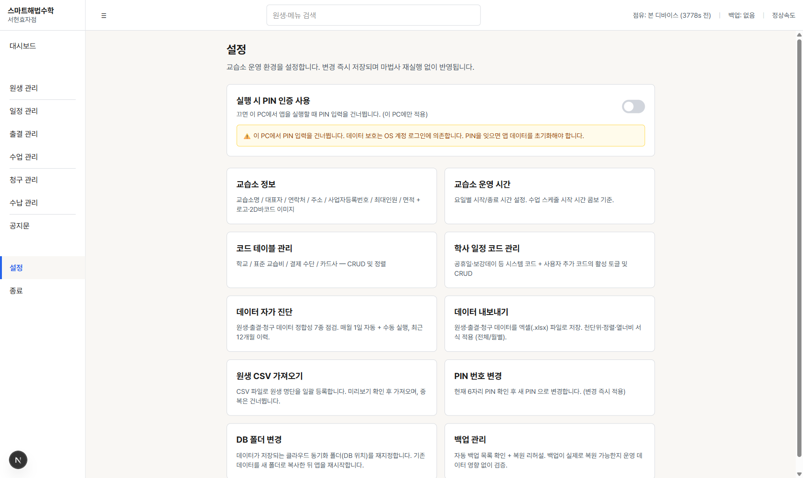
주요 설정 항목:
- 실행 시 PIN 인증 사용 — 앱 실행 시 PIN 입력을 요구할지 여부를 켜고 끕니다.
- 교습소 정보 — 교습소명, 대표자, 연락처, 주소, 로고 등을 등록합니다.
- 교습소 운영 시간 — 요일별 수업 시작/종료 시간을 설정합니다.
- 코드 테이블 관리 — 학교, 표준 교습비, 결제수단, 카드사 목록을 관리합니다.
- 학사 일정 코드 관리 — 공휴일·보강데이 등 일정 코드의 활성화 여부를 관리합니다.
- 데이터 자가 진단 — 원생·출결·청구 데이터의 정합성을 점검합니다(매월 1일 자동 실행).
- 데이터 내보내기 — 원생·출결·청구 데이터를 엑셀 파일로 저장합니다.
- 원생 CSV 가져오기 — 엑셀/CSV로 원생 명단을 한 번에 등록합니다.
- PIN 번호 변경, DB 폴더 변경, 백업 관리 — 보안·저장 위치·백업을 관리합니다.
11. 자주 묻는 질문
Q. 원생을 삭제하려면 어떻게 하나요?
A. 원생 관리에서는 완전 삭제 대신 '퇴교' 처리를 합니다. 원생 상세 화면에서 퇴교 처리를 하면 재원 중 목록에서는 빠지고, 필요 시 다시 '재원' 상태로 되돌릴 수 있습니다.
Q. 결석 후 보강을 다른 날 정규수업 시간에 진행했는데 어떻게 표시되나요?
A. 출결 관리에서 보강을 등록하면, 그 정규수업 날짜 셀에 작은 '+보강' 배지가 표시되어 일반 정규수업 완료와 구분됩니다. 마우스를 올리면 보강 시간과 충당한 결석 날짜를 확인할 수 있습니다.
Q. 청구를 확정한 후에 금액을 실수로 잘못 입력한 걸 알았어요.
A. 확정된 청구도 수정할 수 있지만, 확정 청구 수정 시에는 확인 대화상자가 한 번 더 표시됩니다. 내용을 확인하고 진행하세요.
Q. 인쇄 미리보기 창이 이상하게 보이거나 안 열려요.
A. 교습일정 인쇄와 수강대장 출력은 별도의 인쇄용 창으로 열립니다. 인쇄하거나 취소하면 창이 자동으로 닫힙니다. 문제가 계속되면 프로그램을 재시작해보세요.
Q. 두 대의 PC(교습소/자택)에서 같은 데이터를 쓸 수 있나요?
A. 클라우드 동기화 폴더(예: MYBOX, Dropbox 등)에 데이터를 저장하도록 설정하면 두 PC가 동일한 데이터를 공유합니다. 단, 두 PC를 동시에 실행하면 충돌 방지를 위해 한쪽에서 경고가 표시됩니다 — 한 번에 한 PC에서만 사용해주세요.